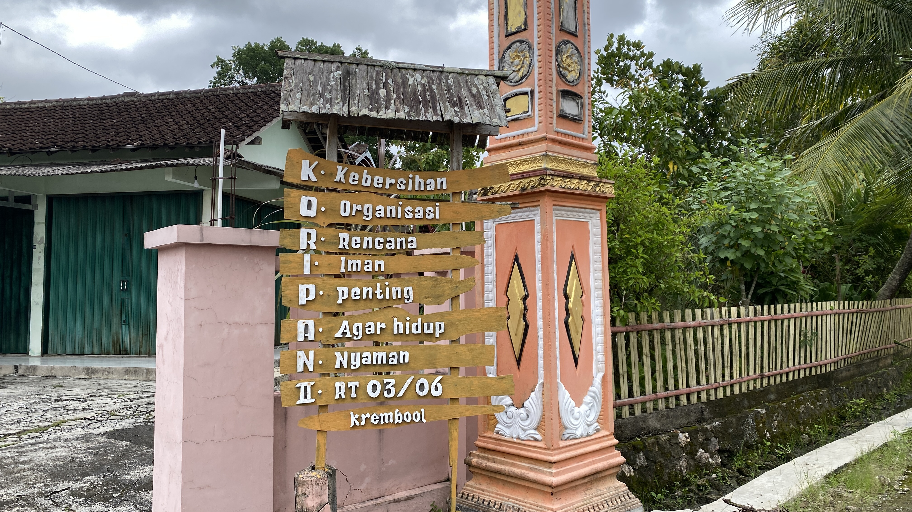
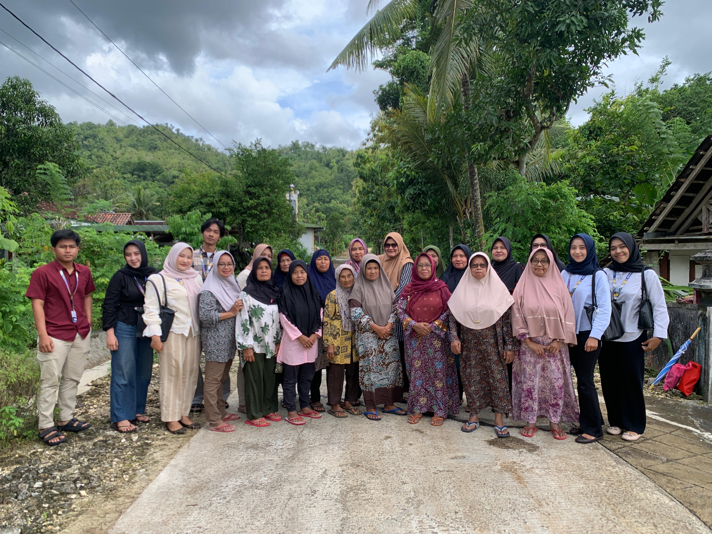
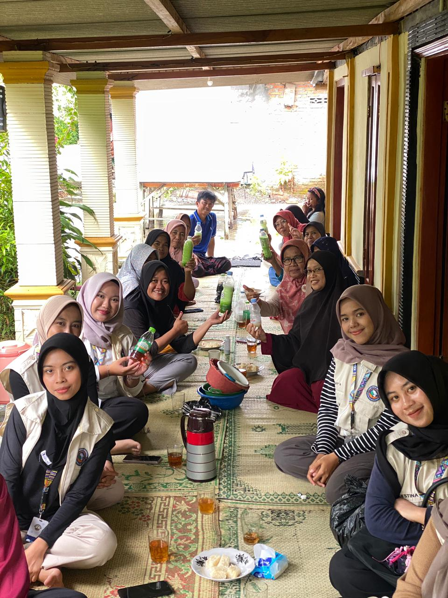

Profil Wilayah
Sejarah Singkat
Terletak di perbukitan karst Kalurahan Sumbergiri, Gunungkidul, nama Koripan II dimaknai sebagai "sumber kehidupan yang tak pernah padam." Sejak awal berdiri, masyarakat kami memegang teguh filosofi Hamemayu Hayuning Bawana.
Semangat ini diwujudkan melalui kehidupan warga yang guyub rukun. Di tengah tantangan alam, Koripan II terus bertumbuh dengan mengandalkan inovasi pertanian lahan kering yang berkelanjutan sebagai napas kehidupan dukuh.




p